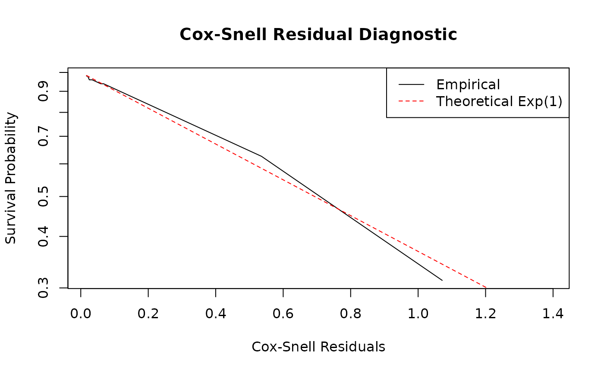

Introduction to Durational Event Models
Source:vignettes/introduction_to_dem.Rmd
introduction_to_dem.RmdAbstract
The redeem package provides tools for the estimation
of Durational Event Models (DEM) via the
dem() function. This framework extends standard Relational
Event Models (REM), which can be fit using the rem()
function, by explicitly modeling the duration of interactions. This
vignette provides a theoretical overview of the model and demonstrates
its application using a simulated dataset.
Theoretical Framework
Unlike standard REMs that treat events as instantaneous, the DEM framework characterizes interactions via two separate intensities:
- Incidence Process (\(\lambda^{0\rightarrow 1}\)): Models the intensity of a pair of actors \((i,j)\) to start an interaction.
- Dissolution Process (\(\lambda^{1\rightarrow 0}\)): Models the intensity of a pair of actors \((i,j)\) to end an already started interaction.
The intensities are modeled as: \[\lambda_{ij}^{0\rightarrow 1}(t, \beta, \alpha, \gamma^{0\rightarrow 1}) = \exp(s_{i,j}(\mathscr{H}_t)^\top \beta + \alpha_i + \alpha_j + f(t, \gamma^{0\rightarrow 1}))\] \[\lambda_{ij}^{1\rightarrow 0}(t, \delta, \phi, \gamma^{1\rightarrow 0}) = \exp(u_{i,j}(\mathscr{H}_t)^\top \delta + \phi_i + \phi_j + f(t, \gamma^{1\rightarrow 0}))\]
where:
- \(\mathscr{H}_t\) defines the history of interactions until time \(t\).
- \(s_{i,j}(\mathscr{H}_t)\) and \(u_{i,j}(\mathscr{H}_t)\) are vectors of summary statistics.
- \(\alpha, \phi\) are actor-specific popularity parameters.
- \(f(t, \gamma) = \sum_{q=1}^Q \gamma_q \mathbb{I}(c_{q-1} \le t < c_q)\) is a baseline step-function that captures temporal variations in the data. The indicator function \(\mathbb{I}(c_{q-1} \le t < c_q)\) takes the value 1 if \(c_{q-1} \le t < c_q\) and 0 otherwise, where \(0 = c_0 < c_1 < \dots < c_Q\) are specified change points and \(\gamma = (\gamma_1, \dots, \gamma_Q)^\top\) is the baseline parameter vector (with \(\gamma_1 = 0\) imposed for model identifiability). Note that here we only look at undirected interactions, so the parameters are symmetric for \(i\) and \(j\). The model is also implemented for directed interactions allowing for asymmetric parameters, i.e., with \(\phi_{i,O}\) and \(\phi_{i,I}\) for the in and outgoing effect of actor \(i\) in the dissolution intensity.
Summary Statistics
The package implements several key statistics to capture network
dynamics. For full mathematical definitions and descriptions of the
available transformations (e.g., log, sig,
bin), please refer to the redeem_terms
documentation.
Key terms include:
- Inertia: \(s_{ij}(\mathscr{H}_t) = N_{ij}(t)\), counting previous \(i \to j\) formation events.
- Degree Effects: Actor-specific activity (\(\alpha\)) and popularity (\(\phi\)).
- Duration: For the dissolution process, the elapsed time since the beginning of the interaction.
- Common Partners: Shared outgoing (OSP) or incoming (ISP) friends.
Fine-tuning with
The estimation process can be customized using the function. This function creates a configuration object that manages algorithmic behavior:
-
estimate: Character; estimation method for (“Blockwise” or “NR”). “Blockwise” is the default and recommended for larger networks. -
it_max&tol: Integer and Numeric; maximum number of iterations and convergence tolerance. These can be given as a vector of length 2 to specify different limits for the formation (first element) and dissolution (second element) processes in . -
accelerated: Logical; ifTRUE, uses SQUAREM acceleration for MM updates to speed up convergence. Can also be a vector of length 2 for process-specific acceleration. -
verbose: Logical; ifTRUE, prints iteration-specific progress. -
simultaneous_interactions: Logical; controls whether actors can participate in multiple interactions at once. -
return_data: Logical; whether to include preprocessed data frames in the result.
For example, to use more iterations for the dissolution process:
ctrl <- control.redeem(it_max = c(50, 200), tol = c(1e-8, 1e-12))Example: Simulating and Fitting a DEM
Data Preparation
A DEM event sequence contains durations encoded sequentially via
interaction states. The event matrix demands four columns:
time, from, to, and
type. A type = 1 transitions the dyad into an
active interaction, while type = 0 dissolves it.
# Simulated continuous-duration interaction sequence
n_nodes <- 10
events <- matrix(c(
1.0, 1, 2, 1, # Node 1 initiates tie with 2
1.5, 3, 4, 1, # Node 3 initiates tie with 4
2.0, 1, 2, 0, # Tie (1,2) concludes (duration 1.0)
2.8, 3, 4, 0, # Tie (3,4) concludes (duration 1.3)
3.5, 1, 3, 1, # Node 1 initiates tie with 3
4.0, 1, 3, 0 # Tie (1,3) concludes (duration 0.5)
), ncol = 4, byrow = TRUE)
colnames(events) <- c("time", "from", "to", "type")Model Fitting
To estimate a DEM, utilize the dem() function, detailing
unique structural formulas for the onset (formula_0_1) and
offset (formula_1_0) transition states. These formulas are
specified using the model terms documented in
redeem_terms.
# Fit the Durational Event Model
fit_dem <- dem(
events = events,
n_nodes = n_nodes,
formula_0_1 = ~1, # Predictors for tie onset
formula_1_0 = ~1, # Predictors for tie offset
control = control.redeem(estimate = "Blockwise")
)
# View summaries using `summary.redeem_result`
summary(fit_dem)
#> Call:
#> dem(events = events, formula_0_1 = ~1, formula_1_0 = ~1, n_nodes = n_nodes,
#> control = control.redeem(estimate = "Blockwise"))
#>
#> Results for Incidence Intensity (0 -> 1):
#> Fixed Effects:
#> Estimate Std. Error t value Pr(>|t|)
#> Intercept -4.07867 0.57734 -7.0646 1.611e-12 ***
#> ---
#> Signif. codes: 0 '***' 0.001 '**' 0.01 '*' 0.05 '.' 0.1 ' ' 1
#>
#> Log-likelihood: -15.236
#>
#> Results for Duration Intensity (1 -> 0):
#> Fixed Effects:
#> Estimate Std. Error t value Pr(>|t|)
#> Intercept 0.068993 0.577349 0.1195 0.9049
#>
#> Log-likelihood: -2.793
#>
#> Combined Model Fit:
#> AIC: 40.05804
#> BIC: 40.45249
#>
#> Total estimation time: 0.008553743 secsInterpretation
- \(\beta\) (Incidence): Positive parameters reflect an augmented intensity to create a network tie.
- \(\delta\) (Dissolution): Positive parameters indicate an accelerated intensity to break a network tie (leading to shorter average interaction durations), while negative parameters identify ties structured to last considerably longer.
Simulation and Model Diagnostics
Evaluating the final DEM allows you to guarantee that your dynamic formulas correctly abstract the empirical interaction realities.
Predicting and Simulating Events
Because the DEM explicitly represents the generative continuous-time
processes, calling the simulate() method synthesizes
completely new behavioral pathways extrapolated from the estimated
parameters.
# Simulate networks matching the observed bounds
simulated_events <- simulate(fit_dem, nsim = 100, time_horizon = 10)Residual Analysis
To verify individual probabilistic predictions along the network evolution, analyze the estimated intensity trajectories via Cox-Snell residuals.
Upon formulating the predicted cumulative intensities up to the
terminal interaction lengths using the predict() method,
the expected cumulative intensities strictly conform to an \(Exp(1)\) exponential distribution if
perfectly calibrated.
The redeem package provides the
get_residuals() function to automate this check. It
calculates the cumulative intensities for all dyads and returns
Kaplan-Meier estimates of the residual survival function alongside the
theoretical \(Exp(1)\) curve.
# Extract residuals for diagnostics using `get_residuals()`
# Note: Ensure return_data = TRUE was set in `control.redeem()`
resids <- get_residuals(fit_dem)
# Plot the Kaplan-Meier estimate of the residual survival vs. Theoretical Exp(1)
plot(resids$time, resids$surv,
type = "l", log = "y",
xlab = "Cox-Snell Residuals", ylab = "Survival Probability",
main = "Cox-Snell Residual Diagnostic"
)
#> Warning in xy.coords(x, y, xlabel, ylabel, log): 1 y value <= 0 omitted from
#> logarithmic plot
lines(resids$time, resids$theoretical, col = "red", lty = 2)
legend("topright",
legend = c("Empirical", "Theoretical Exp(1)"),
col = c("black", "red"), lty = 1:2
)
If the model is accurately specified, the empirical survival curve (black line) should closely follow the theoretical exponential decay (red dashed line). Significant deviations, especially in the tails, suggest that the model fails to capture certain temporal dynamics or that there is unmodeled heterogeneity among dyads.